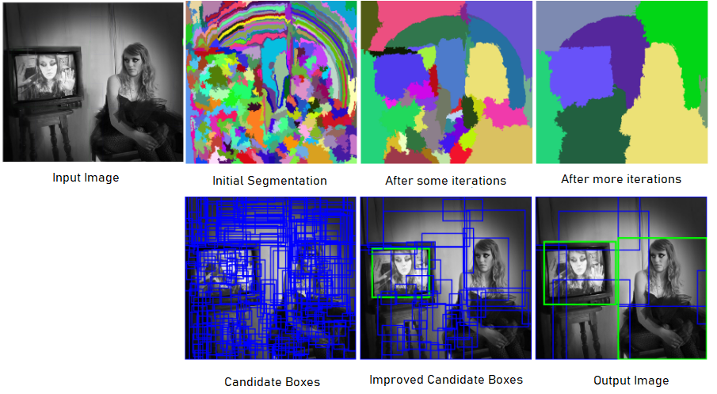
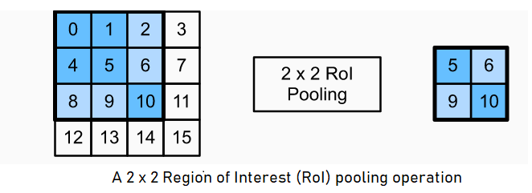
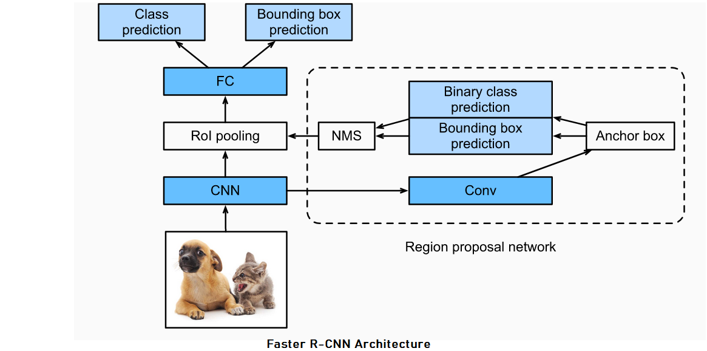

Date: 13th May 2022
Before, Selective Search, R-CNN, Fast R-CNN, Faster R-CNN etc, it is essential to first understand the concepts of Image Augmentation, Fine Tuning, Anchor Boxes and Intersection over Union(IoU)
Deep Neural Networks require a large dataset to train on, to get a good generalization ability. Image Augmentation is a technique for that, if the dataset is relatively small.
Image Augmentation tweaks existing images with few techniques to generate more training images.
Few techniques are: 1. Flipping/Rotation 2. Cropping 3. Changing Color 4. Rescaling the image 5. Translation - moving image along `x` and `y` axes. 6. Adding Guassian Noise that has zero mean. 7. histogram Equalization etc.
Keras's ImageDataGenerator is a good tool for this.
This is another way of solving the above discussed problem - of lacking more data to train. However, here instead of using more data by image augmentation we use transfer learning to transfer the knowledge of parameters learned on some pre-trained model such as ImageNet. Pre-trained models are trained using larger datasets and can help extract image features such as edges, textures, shapes and object composition more effectively.
This technique is called Fine Tuning and comprised of following steps :
1. Pre-train a neural network i.e, source model on a source dataset ( e.g, ImageNet)
2. Create a new neural network i.e, target model. This gets to copy the complete structure and parameters of the source model, except the output layer.
3. Add an output layer to the target model, whose number of outputs is the number of categories needed and in the target dataset. Then randomly initialize model parameters of this layer.
4. Train the target model on the target dataset, where the output layer will be trained from scratch (larger learning rate can be used) while all other parameters of previous layers are fine tuned based on the parameters of the source model.
Bounding Box, first! It describes the spatial location of an object. It is rectangular and determined by `x` and `y` coordinates of the upper-left corner and lower-right corner.
Anchor Boxes : Object detection algorithms try to sample a large number of regions in an input image to get to as accurately as to ground-truth bounding boxes. Every method generate different types of bounding boxes with varying scales and aspect ratios, these generated bounding boxes are called Anchor Boxes
Generating Multiple Anchor Boxes :
Suppose we have an input image that has height `h` and width `w`, and anchor boxes with different shapes are to be generated with scale `s∈ (0,1]` and aspect ratio (width to height ratio) is `r >0`.
In this case, width of anchor box will be -- `ws\sqrtr` and height -- `hs //\sqrtr`
If we have series of scales `s_(1),....,s_(n)` and series of aspect ratio `r_(1),...,r_(n)` then, total number of anchor boxes for an input image will be `w×h×n×m` and number of anchor boex centered on a same pixel will be `n + m -1`
Generalized Intersection over Union (GIoU) :
GIOU helps to understand if two shapes are in proximity of each other or very far, if `|A ∩B| = 0` i.e, IoU` = 0` To find GIoU, we first find the smallest convex shape `C ⊆ S ∈ ℝ^n` enclosing both `A` and `B`. For example, if `A` and `B` are cube, `C` should be a smallest cube too encompassing them, if `A` and `B` are ellipsoid, `C` should be the smallest ellipsoid.
Then, we focus on the normalized measure that focuses on the empty volume between `A` and `B`, by calculating a ratio between total volume of C excluding `A` and `B` and divide it up by the total volume of `C`. This gets further substracted from IoU to achieve GIoU.
(Rezatofighi, H. et al, 2019)
`GIoU = IoU - \frac{|C\(A ∪B)|}{|C|}`
>> GIoU is just as invariant to the scale of the problem as IoU
>> Similar to IoU, the value 1 occurs only when two objects overlay perfectly, i.e, if `|A∩B| = |A∪B|` then `GIoU = IoU = 1`
>> GIoU value converges to `-1` when the ratio between `|A ∪B|` and volume of `|C|` tends to zero, i.e, `lim_(\frac{|A∪B|}{|C|} →0) GIoU(AB) = -1`
`GIoU`, therefore, rectifying weakness of `IoU` can be very useful for 2D/3D tasks
Labelling Anchor Boxes :
Each anchor box has two attributes i.e, class and offset. Class - class of the object appearing in the anchor box. Offset - Offset of the ground-truth bounding box relative to the anchor box.
Usually, an object detection training set comes with the labels for ground-truth bounding boxes and class of object in it. For prediction, we generate multiple anchor boxes, predict its class and offset to ground-truth boxes, calculate loss, and adjust its position furthermore, eventually leading to bounding boxes that are with `IoU > 0.5` ideally with `0.9 +`
Assigning ground-truth bounding boxes to anchor boxes :
If we have anchor boxes `A_(1), A_(2), ....., A_(n)` for an image and ground-truth bounding boxes as `B_(1), B_(2),...,B_(n_(b))` where `n_(a) ≥ n_(b)`
Lets assume a matrix `X ∈ ℝ^(n_(a)×n_(b))` whose element `x_(ij)` in the `i^(th)` row and `j^(th)` column is the IoU of the anchor box `A_(i)` and the ground-truth bounding box `B_(j)`. The algorithm consists of the following steps :
1. Find the largest element in matrix `X` and denote its row and column indices as `i_(1)` and `j_(1)`, respectively. Then the ground-truth bounding box `B_(j_(1))` is assigned to the anchor box `A_(i_(1))`. Afterwards, all elements in `i_(1)^(th)` row and the `j_(1)^(th)` column in matrix `X` needs to be discarded.
2. Next, another largest of all the remaining elements in matrix `X` is searched, and its row and column are denoted `i_(2)` and `j_(2)`. Then, we assign ground-truth bounding box `B_(j2)` to anchor box `A_(i2)` and discard all the elements in the `i_(2)^(th)` and `j_(2)^(th)` column in matrix `X`.
3. Further, we proceed until all elements in `n_(b)` columns in matrix `X` are discarded. Here, we assign a ground-truth bounding box to each of `n_(b)` anchor boxes.
4. Only traverse through the remaining `n_(a) - n_(b)` anchor boxes. For instance, given any anchor box `A_(i)`, find the ground-truth bouding box `B_(j)` with the largest IoU with `A_(i)` throughout the `i^(th)` row of matrix `X`, and assign `B_(j)` to `A_(i)` only if this IoU is greater than a predefined threshold.
Selective Search method uses hierarchical grouping with a bottom up approach. It first calculates similarity between all neighbouring regions, and groups two most similar regions. Then, this process of finding similarity and grouping is repeated until the whole image becomes a single region.
Region of an image can not only be formed because of color, and texture, but lighting conditions such as intensity and shading as well contribute to regions. Therefore, in the first step, the image is divided into many sub-segments based on color, texture, intensity, etc and then based on similarity measure, two similar regions start to group together until we get the whole image as a region.
Similarity Measures :
Similarity is decided with two-pronged approach, first we choose a color space that capture all color spaces with different invariants, and different responses to changes in color, then a similarity metric is choosen for color, texture, size and shape
For the similarity `s(r_(i),r_(j))` between region `r_(i)` and `r_(j)` following metrics are used :
Color Similarity : With 25 bins for each color channel, a color histogram `C_(i) = {C_(i)^1,..., C_(i)^n}` of each region `r_(i)` with dimensionality `n = 75`. Histogram is normalized with `L_(1)` norm and similarity is measured as :
`s_(color)(r_(i),r_(j)) = \sum_{k=1}^{n} min(C_(i)^k,C_(j)^k)`
Color histogram, then, can be effectively propagated through the heirarchy by :
`C_(t) = \frac{size(r_(i)) × C_(i) + size(r_(j)) ×C_(j)}{size(r_(i)) + size(r_(j))}`
and the size of the resulting region is simply the sum of its constituents : `size(r_(t)) = size(r_(i)) + size(r_(j))`
Texture Similarity : It measures textures with a HOG-like feature extracting Guassian derivatives of the image in 8 directions and for each channel constructing a 10-bin histogram, resulting in a 240-dimensional descriptor.
`s_{Texture}(r_(i),r_(j)) = \sum_{k=1}^{n} min(t_(i)^k,t_(j)^k)`
Size Similarity : As all small regions needs to be merged into larger ones, we need to add a size component to our metric, that ensures small regions are more similar to each other gets grouped together :
`s_(size)(r_(i),r_(j)) = 1 - \frac{size(r_(i)) + size(r_(j))}{size(im)}`
where `size(im)` denotes the size of image in pixels.
Shape Compatibility : Idea, here, is to fill the gaps i.e, if `r_(i)` is contained in `r_(j)` it is logcal to merges these first in order to avoid any holes. OTOH, if `r_(i)` and `r_(j)` are hardly touching each other they should not be merged. If `BB_(ij)` is tight bounding box around `r_(i)` and `r_(j)` then similarity metric can be written as :
`s_(fill)(r_(i),r_(j)) = 1 - \frac{size(BB_(ij)) - size(r_(i)) - size(r_(j))}{size(im)}`
Final similarity Measures : It is, then, a combination of all the above four metrics as :
`s_(r_(i), r_(j)) = a_(1)s_(color)(r_(i), r_(j)) + a_(2)s_(Texture)(r_(i), r_(j)) + a_(3)s_(size)(r_(i), r_(j)) + a_(4)s_(fill)(r_(i),r_(j))`
where `a_(i) ∈{0,1}` denotes if the similarity measure is used or not.Evaluation :
Evaluation is done by Average Best Overlap (ABO) and Mean Average Best Overlap. To calculate ABO for a specific class `c`, we calculate the best overlap between each ground truth annotation `g_(i)^c ∈G^c` and the object hypotheses `L` generated for the corresponding image.
`ABO = \frac{1}{|G^c|}\sum_(g_(i)^c ∈G^c) max` Overlap`(g_(i)^c,l_(i))`
where Overlap score measure the area of the intersection of two regions divided by its union :
Overlap`(g_(i)^c,l_(i)) = \frac{area(g_(i)^c)∩area(l_(j))}{area(g_(i)^c)∪area(l_(j))}`
R-CNN, first, extract the region proposals from the input image and label its class and bounding box, then a CNN is implemented to extract its feature. These features gets further used with Support Vector Machine (SVM) to finally predict its class and the bounding box (Girshick et al., 2014).
Object detection modelling with R-CNN can be done in following steps :
1. Perform selective search on images to extract multiple region proposals on input images. These are usually selected at multiple scale with different shapes and sizes. And, each region proposal will be labeled with a class and a ground-truth bounding box. (Girshick et al., 2014) extracted nearly 2000 region proposals.
2. Select a pre-train model such as AlexNet, and remove the output layer. Resize each region proposal to the input size required by the network, and output the extracted features for the region proposal through forward propagation.
All region proposal with the `IoU ≥0.5` is treated as positive whereas rest of region proposals are treated as negative, then SGD is used with learning rate of 0.001
3. Next for each class, we determine with each extracted feature vector, using SVM trained for that class, if that region contain a specific class or not. For partial overlaps, a threshold of 0.3 is used, below which all are labeled negative, and as traning data is too large to fit in, a standard hard mining method is used to converge quickly.
4. Finally, a bounding box regressor is used to predict the ground-truth bounding boxes
Fast R-CNN is comparatively faster to train and test than R-CNN as it takes the entire image as input in the network (Girshick, 2015).
Fast R-CNN architecture consists of following steps :
1. The Fast R-CNN network first processes the whole image with several convolutional and max pooling layers, and produces a feature map.
2. Then, using selective search on input image, `n` region proposals are generated.
3. Next, for each of `n` region proposals, a region of interest(RoI) pooling layer extracts a fixed length feature vector from the received feature-map.
Region of Interest (RoI) pooling layer :
RoI pooling layer is slightly different from conventional pooling layer, here we can directly specify the output shape `H×W`. It then uses max pooling to convert the feature inside a region of interest into a small feature map.
Each RoI is defined by a four-tuple `(r,c,h,w)` that specifies its top-left corner `(r,c)` and its height and width `(h,w)`
Afterwards, RoI max pooling works by dividing the `h×w` RoI window into an `H×W` grid of sub-windows of approximate size `h//H × w//W` and then max-pooling the values in each sub-window into the corresponding output grid cell.

Here, height and width of any subwindow gets rounded up and the largest element is used as the output
A Fast R-CNN network produces two sibling output layers. One provides a discrete probability distribution (per RoI), `p = (p_(0), ... ,p_(k))` over `K+1` categories. Another layer provides bounding-box regression offstes, `t^(k) = (t_(x)^k, t_(y)^k, t_(w)^k, t_(h)^k)` where `t^k` specifies a scale-invariant translation and log-space height/width shift relative to region proposal.
If each training RoI is labeled with a ground-truth class `u` and a ground-truth bounding box regression target is `v`, then multi-task loss `L` on each labeled RoI is as :
`L(p,u,t^u,v) = L_(cls)(p,u) + λ[u≥1] L_(loc)(t^u,v)`
in which `L_(cls)(p,u) = - log p_(u)` is log loss for true class `u`.
Here, hyper-parameter `λ` is to control the balance between the two tasks losses.
The Iverson bracket indicator function `[u≥1]` evaluates to 1 when `u ≥1` and otherwise `0`
The second task loss,`L_(loc)` is defined over a tuple of true bounding-box regression targets for class `u, v = (v_(x), v_(y), v_(w), v_(h))` and a predicted tuple `t^u = (t_(x)^u, t_(y)^u, t_(w)^u, t_(h)^u)` again for class `u`. For bounding-box regression, we use the loss :
`L_(loc)(t^u, v) = \sum_{i∈x,y,w,h} smooth_(L_(1))(t_(i)^u - v_(i))`
where `smooth_(L_(1))(x) = 0.5x^2` if `|x| <1` and `|x| - 0.5` otherwise
Faster R-CNN replaces selective search with a Region Proposal Network (RPN). It helps reduce region proposals without loss in accuracy for object detection.(Ren et al., 2015)
Region Proposal Networks (RPNs) :
A RPN takes an input image and outputs a set of rectangular object proposals, each with an objectness score. It is constructed by adding two additional conv layers: one that encodes each conv map position into a short feature vector and a second that, at each conv map position, outputs an objectness score, and regressed bounds for `k` region proposal.
To generate Region Proposal, we slide a small network over the conv feature map output of the first CNN, it is fully-connected to an `n×n` spatial window of input conv feature map. Each sliding window is then mapped to a lower-dimension vector, which is fed into two sibling fully-connected layers - box-regression layer (reg) and box-classification layer (cls).

Then, at each sliding-window location, we get `k` region proposal where reg layer provides `4K` output (coordinates of `k` boxes) and cls layer provides `2k` score estimating probability of object / not-object for each proposal.
These `k` proposals are parameterized relative to `k` reference boxes called Anchors. With k = 9 anchor boxes at each sliding position.
Importantly, some RPN proposals highly overlap each other. Therefore, non-maximum suppression (NMS) is adopted on the regions proposals based on their objectness-score,, with IoU threshold fixed at 0.7. NMS helps remove a substantial number of proposals.
References :